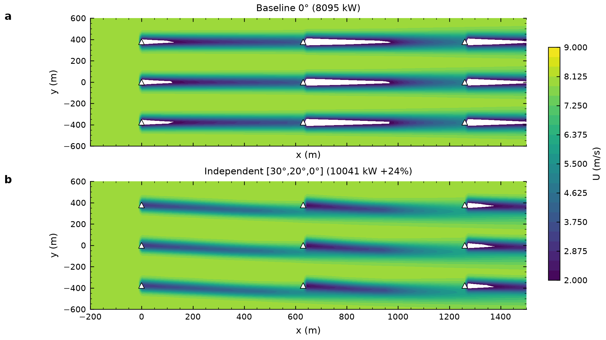
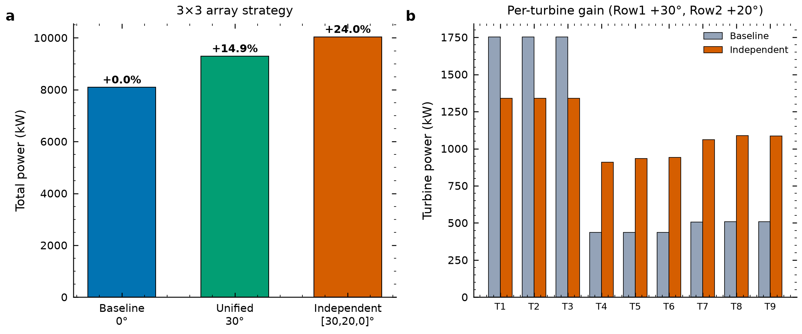
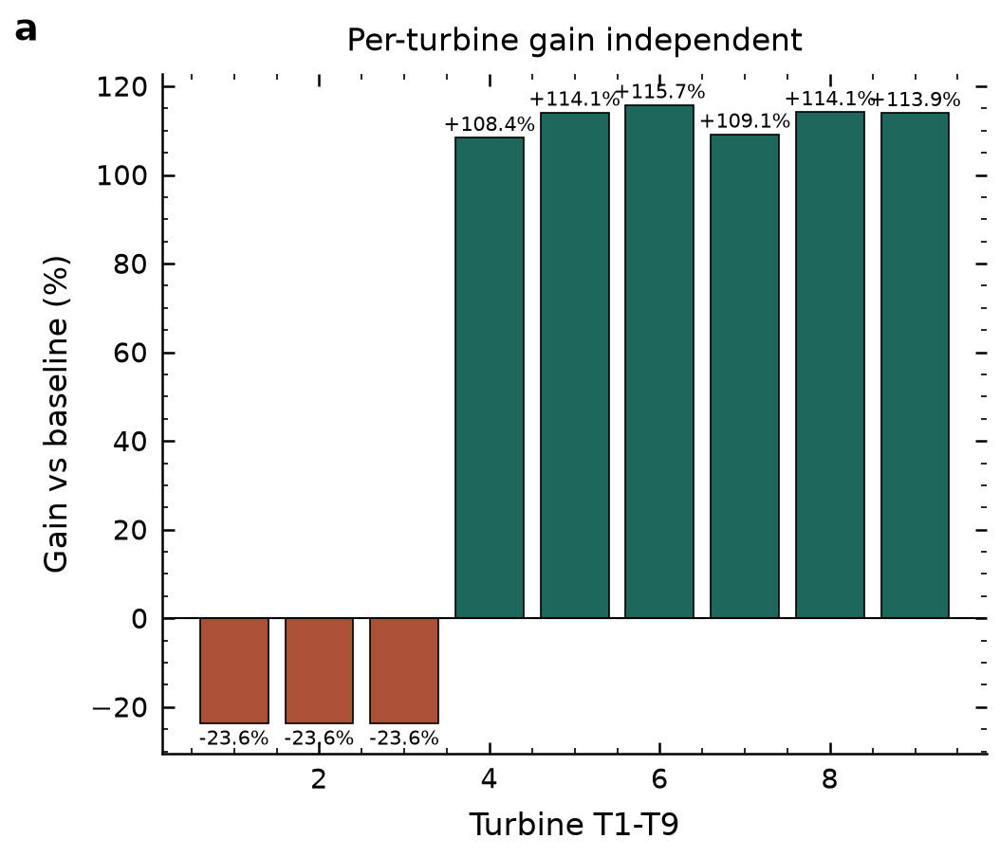
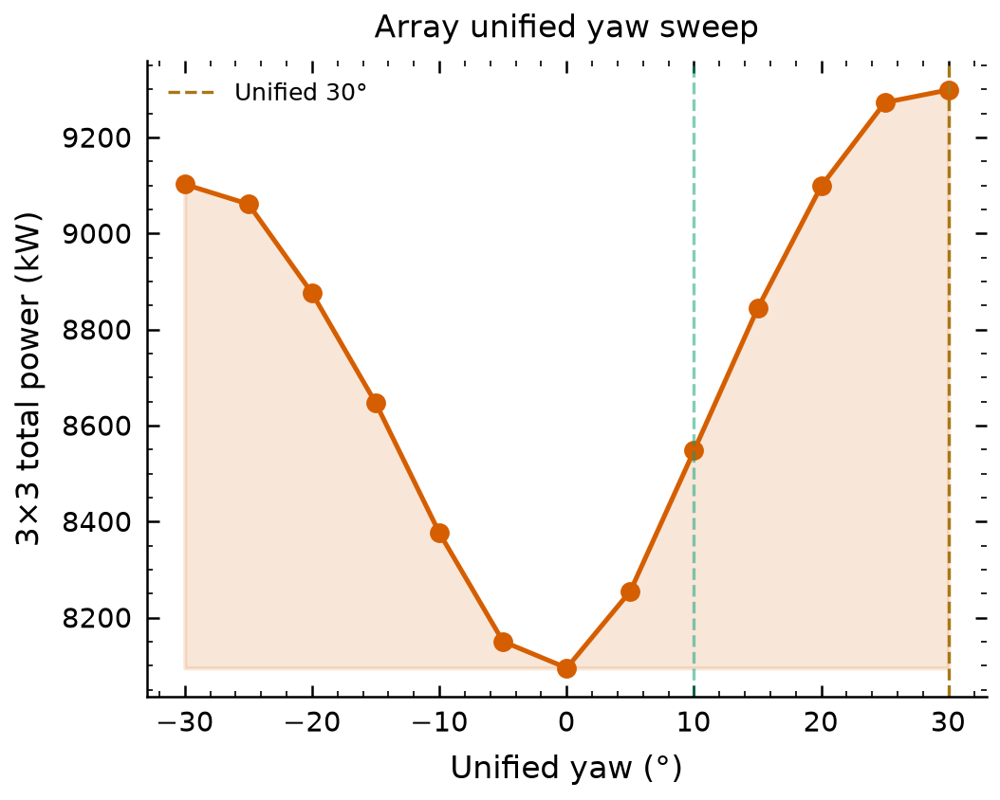

全场总功率
—
第 1 排总功率（上游 3 台）
—
第 2 排总功率（中游 3 台）
—
第 3 排总功率（下游 3 台）
—
FIG. A3×3 风电场单机偏航角与功率分布 (Top-Down)
圆点颜色=单机功率（绿高、金中、砖红低）；黑线箭头=机头实际偏航朝向；来流自左向右。
FIG. B三大控制策略全场及逐排功率对比
对比证明：独立协同偏航相比统一偏航，使中下游机组功率获得更优释放。
FIG. C3×3 单机功率热力矩阵 (kW)
Row 1 为迎风最前排，Row 3 为顺风最后排；Col 1~3 为横向机位。
LEDGER九台风电机组详细运行参数表
| 机位编号 | 所在排/列 | 推荐偏航角 | 基准功率 (0°) | 当前功率 | 单机相对增益 |
|---|
NATURE FIG · 013×3 阵列流场走廊清除 — Baseline 0° vs Independent [30°,20°,0°]

Baseline 0° 全尾流叠加 vs Independent [30°,20°,0°] 走廊清除，总功率 8095→10041 kW (+24.04%)。Nature双栏 7.2in，viridis 感知均匀，色盲安全 Okabe-Ito。 → 下载PDF矢量
NATURE FIG · 023×3 阵列三策略总功率对比

总功率柱：Baseline 0° (8095 kW) / Unified 30° (9299 kW +14.9%) / Independent [30°,20°,0°] (10041 kW +24.0%)。单栏 3.5in，灰色基线 vs 绿色最优，数值标注。 → PDF
NATURE FIG · 039机增益瀑布 — 上游让利 / 下游暴增

上游 Row1 T1-T3 -23.6% 让利 (-414 kW/台)，下游 Row2 +108.4%~+115.7% 回升，Row3 +109%~+114%，全场净 +24.04%。茶色负 / 绿色正，0 轴对齐。 → PDF
NATURE FIG · 04统一偏航扫掠 — 0°→30°增益曲线

统一偏航 0°→30°总功率 8095→9299 kW，填色增益区间，虚线标注最优 30°。 → PDF